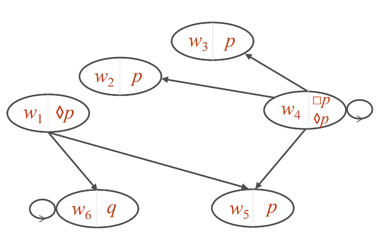
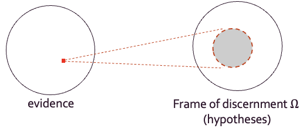
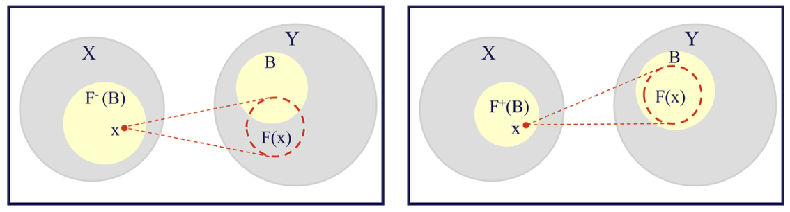

An introduction to Modal logic and Dempster-Shafer theory
Modal logic
Modal logic is an extension of classical propositional logic. New operators, called modal operators, are introduced to reason about statements whose truth may depend on the specific context they are in, or on their interpretation, rather than being universally true or false: the necessity(□) and the possibility (◊) operators. Thus, instead of being simply True or False, in modal logic a fact can also be Possibly True or False or Necessarily True or False.

Modal logic concepts are defined on a set of possible worlds connected by accessibility relations (Kripke structures). A world is meant to signify a scenario or state of affairs, where all the accessible worlds are visible from a considered world; a proposition can hold in some of these worlds but not in others.
Given a set of possible worlds, necessity and possibility can be defined as such:
- A proposition p is necessary if it holds in all worlds accessible from the current one
- A proposition p is possible if it holds in at least one accessible world
These operators provide a way to express partial knowledge and contextual reasoning, making modal logic suitable for modeling high-level semantic concepts from uncertain or incomplete observations, and for usage on real-world applications, where semantic ambiguity is often inherent, and having noise and uncertainty in the data is the norm.
Dempster-Shafer theory
Dempster-Shafer theory (DST), also known as evidence theory, is a mathematical framework for reasoning under uncertainty that generalizes classical probability theory. In probability theory, a function assigns a probability mass to a single hypothesis; in DST, a multi-valued mapping, going from a set of evidence to a set of hypotheses called the frame of discernment Ω, assigns basic belief masses to arbitrary subsets of hypotheses, allowing to model an uncertain scenario where the available information is sufficient to individuate a subset of hypothes, but insufficient to discriminate among them.

In a scenario where only two hypotheses A and B are possible, but not enough information is available to discriminate within the two, classical probability theory may assign the same probability mass to both A and B, i.e., P(A)=0.5 and P(B)=0.5, not allowing to distinguish between the two hypotheses being equally likely or simply the lack of information leading to prefer one over the other. In DST, ignorance can be explicitly represented by assigning all the belief mass to the whole frame of descernment (in this case, containing A and B), to indicate that only the statement "one of the hypothese is true" can be supported by the available evidence, without committing to either A or B.
Given a basic belief assignment m (a multi-valued mapping from the evidence set to the frame of discernment) two complementary measures can be derived: belief and plausibility. The belief of a hypothesis B, Bel(B), represents the minimum amount of evidence support that can unequivocally be committed to A, obtained by summing the masses of all subsets entirely contained in B (as the example in the figure below, on the right). The plausibility of B, Pl(B), measures the maximum amount of evidence support that is not incompatible with B, obtained by summing the masses of all subsets having a non-empty intersection with B (on the left in the figure below).

Belief and plausibility define an interval [Bel(B), Pl(B)], within which the true probability of B is expected to lie. The width of the interval quantifies the amount of residual uncertainty: a wider interval indicates more ignorance and the need for additional evidence.
Bridging modal logic and Dempster-Shafer theory
A bridge between modal logic and DST can be built by defining plausibility and belief from DST in terms of the possibility and necessity operators from modal logic, allowing to leverage the strengths of both frameworks.
To know more on how I applied modal logic and evidence theory to deal with uncertainty in real-life use cases, you can read my latest publications or read a summary in projects.
ReferencesShafer, G. (1976). A Mathematical Theory of Evidence. Princeton University Press.
B. Chellas. “Modal Logic, an Introduction”. In: Cambridge University Press, Cambridge, 1980
E. Tsiporkova, V. Boeva, and B. De Baets. “Dempster–Shafer theory framed in modal logic”. In: International journal of approximate reasoning 21.2 (1999), pp. 157–175.